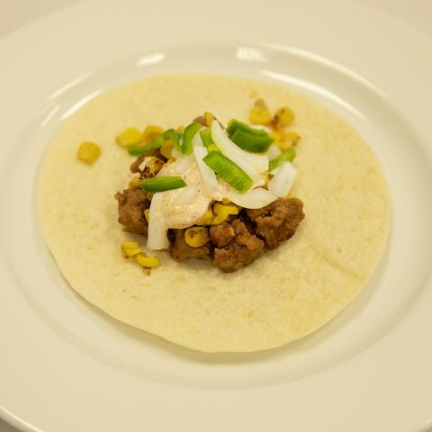

Four days, four towns, thirteen front doors. Walking the streets we keep talking about - for us.
Wed 30 Sep → Sun 4 Oct 2026John, solo this timeEWR ↔ SANBase: Vista
Research only · no bookings yet
Oceanside, from the pier. Somewhere behind those palms is a kitchen we'll argue about paint colours in.
Maya,
This is the week I go and stand in the actual driveways. Fourteen doors, four towns, one very patient Tesla. Your filter is on the page now - Vista as the base, young-family streets, schools, grocery minutes, guest parking, no unkept blocks. Escondido is just a look. You get every door by text from the kerb, scored that way.
Nothing is booked yet. This is the shape of it, pretty and complete, so we can stamp it together. Two coffees most days, because scouting is serious work.
Oceanside · Vista (priority) · San Marcos · Escondido (check)
What we're looking for
4BR · garden · ≤ ~$1M · Carlsbad-vibe streets
Vista first. Young families, good schools, grocery minutes away, park/greenery, Carlsbad Village close. Beach-close not required. Escondido is a look, not the bet.
Maya's filter
locked 20 Sep
The neighbourhood test from the call. Every door gets scored against this - not just the listing photos.
Yes - feel like home
Safe, clean streets · affluent, young-family energy (not a retiree bubble)
Good school district for the kids
Nice grocery a few minutes' drive
Greenery / a park nearby
Not too far inland - Carlsbad vibe; Vista is the base because Carlsbad Village is a quick hop with baby
Garage plus street parking for guests (or guest lots if gated)
Hard no-nos
Unkept houses, smashed-up cars on the block
Crappy streets - if it doesn't feel right from the kerb, it isn't
Bad school district (Nick tip or you find it yourself)
Beach-front premium for its own sake - expensive, not the life right now
How to use it on the kerb: photo the street both ways, note guest parking, walk or time the park, check grocery minutes on Maps, glance school ratings before you fall in love with the kitchen. Beach is a bonus, not the goal. Escondido is a check day only - likely too inland and too big. Score the Carlsbad/Village drive hard; do not fall in love with the kitchen alone.
Why Vista is the hub
one Airbnb · priority town
Vista is the place we are most interested in - so we sleep there. Oceanside west, San Marcos east, Carlsbad Village a baby-stroller hop, Escondido a one-day check only (likely too inland and too big). One suitcase, one Tesla base, star-shaped days.
🗺️ Why Vista is the hub. Star from the Airbnb: Oceanside, San Marcos, Carlsbad Village, and a thin Escondido look. Priority streets are in Vista.
Evening nonstop, late travel night. Depart EWR 5:02 PM, land SAN 7:58 PM, pick up the Tesla in Point Loma around 8:30, check in at the Hilltop house around 9:30, then eat in Vista. The Wednesday Carlsbad Village farmers market (2:30-7:00 PM) is missed - you are still in the air. Saturday's Vista farmers market is the one that still fits. No coffee: wheels down after 4 PM. Not Brickmans - that is across town in San Marcos.
No viewings · travel day☕ No coffee · after 4 PM🥕 Village market missed
Missed. State St runs Wednesdays 2:30-7:00 PM (Mar-Oct), and you land at 7:58 PM. Do not detour to the Village tonight. The market that still fits is Saturday's Vista Farmers Market.
Missed · evening arrival
SKIP
☕
Coffee
No coffee today
After-4 PM rule. You land at 7:58 PM, so there is no cup on Wednesday.
~8:30 PM
🚗
Car pickup
2026 Tesla Model Y Premium - FSD included
Turo, host Tony in 92106 (Point Loma - minutes from SAN). Landing is 7:58 PM, so confirm an evening handover or SAN delivery with the host, check FSD is active on this car before you pull away, and charge if needed. Car details.
Same Hilltop listing · $687 / 4 nights · private driveway. Arrival is late - confirm with the host that a ~9:30 PM check-in on 30 Sep works. Stay details.
Late
🍽️
Dinner
Late dinner in Vista
Eat near the Hilltop house after check-in. Not Brickmans - that is across town at the Lakehouse in San Marcos, and this night is already SAN → Point Loma → Vista. Whatever is still open nearby; no reservation.
EST $25-40
Practical heart: Evening arrival, not a full Wednesday. Carlsbad Village farmers market is missed. No coffee after 4 PM. Dinner stays in Vista. Confirm late check-in with the Hilltop host. Saturday Vista Farmers Market is later on this page.
Oceanside
Thu 1 Oct
07:00 AMDrive to Oceanside
07:30 AMCoffee
08:15 AMBreakfast
09:30 AM-12:00 PMViewings
12:30 PMLunch
01:45 PMCoffee
03:00 PMTrader Joe's
03:30 PM-05:00 PMMore homes
06:30 PMDinner
🗺️ Thursday route. Oceanside loop out-and-back from the Vista hub (~15-25 min).
The pier at golden hour - the reward for a dense morning.
Coastal-adjacent, not beach-or-bust. Four homes inland of the sand (Fire Mountain / South O energy) - Maya said beach-close is expensive and not the life right now. Score the streets, schools, guest parking, and grocery minutes. The pier is a reward walk, not the filter.
2570 Vista Way. The everyday shop if you lived near the coast - small, cheap, fast. Clock how long the lot takes and whether this is your weekly rhythm. Maps.
Vista: a house, a yard, hills behind. Roughly the whole brief.
Home turf. Vista is why we came - thick doors, a real walk at Buena Vista Park (trails + creek shade), grocery you would actually use, and a late-afternoon Carlsbad Village wander that ends in a public dinner. No hotel move; you already sleep here.
🏡 5 Vista doorsPriority town · home turf🌳 Buena Vista Park☕ 2 coffees
Vista is the bet. Walk the pockets that feel young-family and Carlsbad-close. Score guest parking, schools, and street feel on every door - no pocket is pre-killed from the couch.
1601 Shadowridge Dr, 92081. Over two miles of hiking/biking trails, creek shade, hill views of south Vista. This is the greenery test for Shadowridge doors - walk it at stroller pace, then ask if you'd do this on a Tuesday. Maps.
State St / Grand Ave. The walk-with-baby test - shops, ocean air, without paying beach-house prices for the bedroom. ~10-20 min from most Vista pockets. If Vista doesn't make this feel easy, it's the wrong Vista pocket.
112 State St. Stay in the Village after the stroll - Mexican / coastal, OpenTable public. Sanders Social House at Shadowridge is members + guests only (club membership page). Solo scout = public table. Alt if full: 264 Fresco · State St.
From Double Peak: all of San Marcos laid out like a map of maybes.
Away day from the Vista base. Morning can still hit the Vista Farmers Market (you live here), then east into San Marcos for doors + Costco. Beach still optional.
355 S Melrose Dr (courthouse lot), every Saturday 08:00 AM-12:00 PM. Do this before the San Marcos doors - it's the life Maya described. Wednesday's Carlsbad Village market is missed; this Saturday market is the one that still fits.
725 Center Dr. The big weekly haul from the Vista base (short east hop) - bulk, meat, household. Membership assumed; if you're not a member, walk the front and clock the parking crush instead. Maps.
Walk the aisles · parking · checkout vibeAlt: Vons / Ralphs
02:45 PM→ 5:30:00 PM
🌳
Afternoon
Home #3 + a park walk
Discovery Lake or the neighbourhood green. Sit on a bench for ten minutes and just listen.
Street both waysGuest parking?Park · schoolNo unkept / smashed cars
Escondido at sunrise - the early start is worth it.
Check day only - not the bet. John's guess: too inland and too big a city. Thin the doors, time the drive back to Vista / Carlsbad Village from each kerb, then SAN. Do not let a pretty kitchen override the geography.
⚠ 2 doors · check only · not the bet🏡 4 Oceanside doorsEscondido☕ 1 coffee (morning)Airbnb checkout
Escondido is old grove country - hills that used to be citrus and avocado. If one of Sunday's gardens has a fruit tree, that's the photo I'm sending first.
1633 S Centre City Pkwy. The best natural / organic full shop in Escondido - local institution. Quick walk after the last door, before lunch. Trader Joe's on Centre City if you want the cheaper twin. Maps.
S Escondido Blvd. Farm tacos - on the NYT 2026 list. Wed-Sun 11am-6pm. Eat by ~12:30 to protect the airport buffer.
EST $13-23

SKIP
☕
Coffee · after lunch
Skipped - airport run
Grab a second round at James only if you're ahead of schedule.
01:00 PM~45-60 min
🛣️
Drive note
Escondido → SAN · ~45-60 min
Add a 90+ minute pre-flight buffer. Hand the Model Y back to the Turo host - SAN drop-off or Point Loma (92106), whichever you agreed; top up the charge to the listing's return level first. 🗺️ Maps drive · Escondido → SAN
EVENINGconfirm board
✈️
Flight
SAN → EWR · evening preferred
Sunday SAN → EWR is not locked. No return price on this page. Outbound is $374 one-way; return TBD. Flight details.
LATEin air / home
🍽️
Dinner
In the air / home late
No reservation. Thirteen houses to talk about instead.
Where you'd buy food
living-here check
One supermarket walk per town - not a shop, a vibe check. Parking, aisles, how it feels if this were Tuesday forever. Primary and alt both linked.
The three bookings that turn this from a page into a plan. Stay and the Model Y were quoted solo on 20 Sep 2026. The outbound flight was read 21 Sep. Nothing is booked. The return is still open.
✈️ Flights - EWR ↔ SAN
Locked for now: outbound only. Alaska nonstop Wed 5:02 PM EWR → 7:58 PM SAN · 5h56 · $374 one-way, 1 adult economy. Read 21 Sep 2026 ~8:33pm ET from Google Flights. Return SAN → EWR Sunday 4 Oct is not locked. Outbound $374 OW + return TBD. Not booked - fares move.
Alaska nonstop · Wed evening ♥
Locked
Wed 5:02 PM → 7:58 PM · 5h56
Wheels down 7:58 PM SAN. Late travel night: Tesla ~8:30 PM, Hilltop check-in ~9:30 PM (confirm with the host), dinner in Vista. Carlsbad Village farmers market is missed. No coffee after 4 PM.
$3741 adult economy · one-way · read 21 Sep
Sunday return · SAN → EWR
Not locked
Sun 4 Oct · time not locked
Still open. The outbound is not a round trip. Outbound $374 OW + return TBD.
🏠 Stay - Vista base
Locked:Hilltop 1 Bedroom House in Vista · 30 Sep-4 Oct · 1 adult. John stamped the listing. Not paid yet. Wednesday arrival is ~9:30 PM - confirm late check-in with the host.
Hilltop 1 Bedroom House ♥
Locked · not booked
Detached small house · quiet Vista hilltop · Vista Village ~3 mi · sleeps 4
Parking: free private driveway (Model Y friendly). No EV charger listed - charge elsewhere.
The requirement, met: a new-generation Tesla with FSD (Supervised) - and the pick is a 2026 Model Y Premium with FSD included, no add-on. FSD still means eyes on the road; it just makes four days of 78 and I-5 a lot gentler. Locked for the plan, not booked.
2026 Tesla Model Y Premium - FSD included ♥
Locked · not booked
Turo · host Tony · 92106 (Point Loma, minutes from SAN). Sep 30 - Oct 4 2026. FSD comes with the car - nothing extra to switch on or pay for.
$501before taxes · 4 days · Turo taxes, fees & protection plan still to add
Open the Turo listing - confirm SAN delivery or the pickup spot, mileage allowance, and the all-in total on the checkout screen before stamping. Supercharging is renter-paid (~$10-15 a charge).
What the dream costs
solo, this trip
Hilltop Airbnb ($687) and the Model Y are real solo quotes. Food and coffee are estimates. Outbound flight is $374 one-way; return is TBD. The old ~$2,400-2,750 assumed a $707 round trip.
Line
USD
Flights · Alaska nonstop outbound · 1 adult economyRead 21 Sep 2026 ~8:33pm ET. Alaska nonstop EWR 5:02 PM → SAN 7:58 PM · 5h56 · $374 one-way. Return SAN → EWR Sun 4 Oct TBD.
$374
Airbnb · Hilltop 1BR house · VistaQuoted 20 Sep · fees included · not booked · listing
$687
2026 Tesla Model Y Premium · FSD included · Turo · 4 daysQuoted 20 Sep · listing before taxes. Turo taxes, fees & protection plan not yet added
$501
Food · breakfast / lunch / dinner · ~4.5 daysSolo EST (~$55-85 a day)
$250-380
Coffee · café stopsSolo EST · morning + after lunch, nothing after 4 PM
$48-64
Parking · tolls · SuperchargingEST
$40-80
Misc · tips, water, contingencyEST
$50-100
Grand total · soloNo new total. Return is TBD, so this is not a round-trip sum. The old ~$2,400-2,750 assumed a $707 United round trip. Outbound is now $374 one-way. Turo taxes, fees & protection on the $501 are still extra.
TBD
Before we stamp
The little decisions that lock the big ones.
When do we book? Fares and the Model Y move; flights first, then a Vista Airbnb, then the Turo.
Turo Model Y ($501 before taxes): confirm the all-in total with taxes, fees and protection plan, SAN delivery vs. Point Loma pickup, and mileage - then book it.
Airbnb: Hilltop 1 Bedroom House stays locked · $687 / 4 nights · private driveway · listing · not paid yet. Confirm with the host that a ~9:30 PM Wednesday check-in is allowed.
Flight: Alaska nonstop Wed 5:02 PM EWR → 7:58 PM SAN · 5h56 · $374 one-way, 1 adult economy (locked for now, read 21 Sep). Return SAN → EWR Sunday 4 Oct is not locked. Outbound $374 OW + return TBD.
Vista is the base and the priority town. Escondido stays a check day only. Still right?
Sunday return time - still not locked, and there is no return fare on this page. Re-check SAN → EWR before we stamp a price.